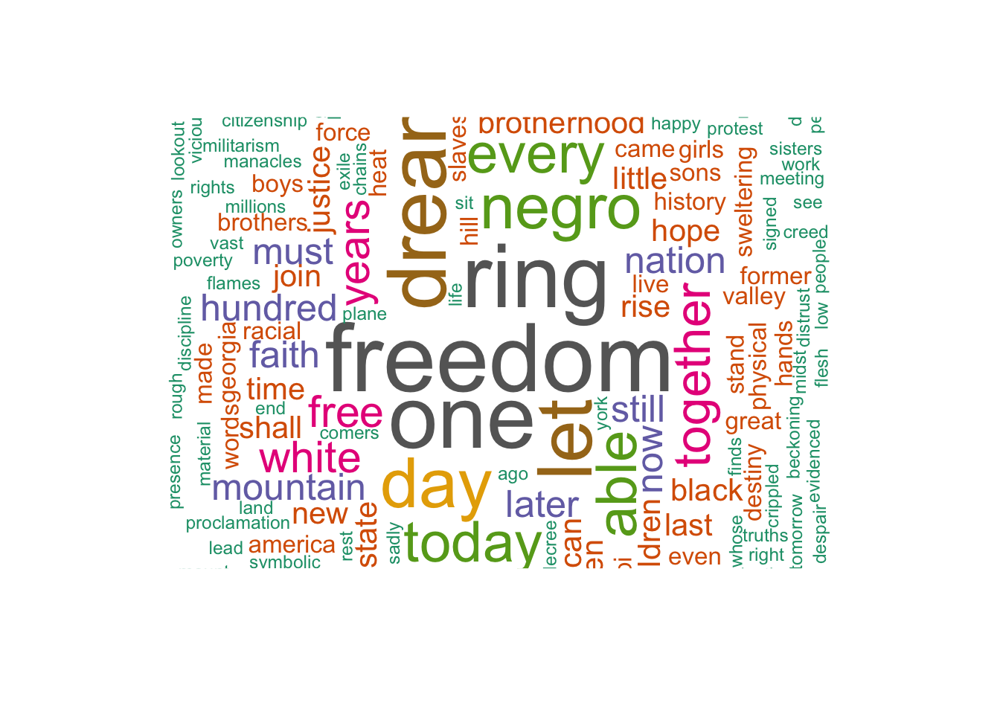

[1] "I am happy to join with you today in what will go down in\r\nhistory as the greatest demonstration for freedom in the history\r\nof our nation. "
[2] "Five score years ago a great American in whose symbolic shadow\r\nwe stand today signed the Emancipation Proclamation. This\r\nmomentous decree came as a great beckoning light of hope to\r\nmillions of Negro slaves who had been seared in the flames of\r\nwithering injustice. It came as a joyous daybreak to end the long\r\nnight of their captivity. "
[3] "But one hundred years later the Negro is still not free. One\r\nhundred years later the life of the Negro is still sadly crippled\r\nby the manacles of segregation and the chains of discrimination. "
<<SimpleCorpus>>
Metadata: corpus specific: 1, document level (indexed): 0
Content: documents: 26
[1] I am happy to join with you today in what will go down in\r\nhistory as the greatest demonstration for freedom in the history\r\nof our nation.
[2] Five score years ago a great American in whose symbolic shadow\r\nwe stand today signed the Emancipation Proclamation. This\r\nmomentous decree came as a great beckoning light of hope to\r\nmillions of Negro slaves who had been seared in the flames of\r\nwithering injustice. It came as a joyous daybreak to end the long\r\nnight of their captivity.
[3] But one hundred years later the Negro is still not free. One\r\nhundred years later the life of the Negro is still sadly crippled\r\nby the manacles of segregation and the chains of discrimination.
[4] One hundred years later the Negro lives on a lonely island of\r\npoverty in the midst of a vast ocean of material prosperity.
[5] One hundred years later the Negro is still languishing in the\r\ncomers of American society and finds himself in exile in his own\r\nland.
[6] We all have come to this hallowed spot to remind America of\r\nthe fierce urgency of now. Now is the time to rise from the dark\r\nand desolate valley of segregation to the sunlit path of racial\r\njustice. Now is the time to change racial injustice to the solid\r\nrock of brotherhood. Now is the time to make justice ring out for\r\nall of God's children.
[7] There will be neither rest nor tranquility in America until\r\nthe Negro is granted citizenship rights.
[8] We must forever conduct our struggle on the high plane of\r\ndignity and discipline. We must not allow our creative protest to\r\ndegenerate into physical violence. Again and again we must rise\r\nto the majestic heights of meeting physical force with soul\r\nforce.
[9] And the marvelous new militarism which has engulfed the Negro\r\ncommunity must not lead us to a distrust of all white people, for\r\nmany of our white brothers have evidenced by their presence here\r\ntoday that they have come to realize that their destiny is part\r\nof our destiny.
[10] So even though we face the difficulties of today and tomorrow\r\nI still have a dream. It is a dream deeply rooted in the American\r\ndream.
[11] I have a dream that one day this nation will rise up and live\r\nout the true meaning of its creed: 'We hold these truths to be\r\nself-evident; that all men are created equal."
[12] I have a dream that one day on the red hills of Georgia the\r\nsons of former slaves and the sons of former slave owners will be\r\nable to sit together at the table of brotherhood.
[13] I have a dream that one day even the state of Mississippi, a\r\nstate sweltering with the heat of injustice, sweltering with the\r\nheat of oppression, will be transformed into an oasis of freedom\r\nand justice.
[14] I have a dream that little children will one day live in a\r\nnation where they will not be judged by the color of their skin\r\nbut by the content of their character.
[15] I have a dream today.
[16] I have a dream that one day down in Alabama, with its vicious\r\nracists, with its Governor having his lips dripping with the\r\nwords of interposition and nullification, one day right there in\r\nAlabama little black boys and black girls will be able to join\r\nhands with little white boys and white girls as sisters and\r\nbrothers.
[17] I have a dream today.
[18] I have a dream that one day every valley shall be exalted,\r\nevery hill and mountain shall be made low, the rough places\r\nplains, and the crooked places will be made straight, and before\r\nthe Lord will be revealed, and all flesh shall see it together.
[19] This is our hope. This is the faith that I go back to the\r\nmount with. With this faith we will be able to hew out of the\r\nmountain of despair a stone of hope. With this faith we will be\r\nable to transform the genuine discords of our nation into a\r\nbeautiful symphony of brotherhood. With this faith we will be\r\nable to work together, pray together; to struggle together, to go\r\nto jail together, to stand up for freedom forever, )mowing that\r\nwe will be free one day.
[20] And I say to you today my friends, let freedom ring. From the\r\nprodigious hilltops of New Hampshire, let freedom ring. From the\r\nmighty mountains of New York, let freedom ring. From the mighty\r\nAlleghenies of Pennsylvania!
[21] Let freedom ring from the snow capped Rockies of Colorado!
[22] Let freedom ring from the curvaceous slopes of California!
[23] But not only there; let freedom ring from the Stone Mountain\r\nof Georgia!
[24] Let freedom ring from Lookout Mountain in Tennessee!
[25] Let freedom ring from every hill and molehill in Mississippi.\r\nFrom every mountainside, let freedom ring.
[26] And when this happens, when we allow freedom to ring, when we\r\nlet it ring from every village and hamlet, from every state and\r\nevery city, we will be able to speed up that day when all of\r\nGod's children, black men and white men, Jews and Gentiles,\r\nProtestants and Catholics, will be able to join hands and sing in\r\nthe words of the old Negro spiritual, "Free at last! Free at\r\nlast! Thank God almighty, we're free at last!"
Warning in wordcloud(names(wordCounts), wordCounts, min.freq = 1, random.order =
FALSE, : genuine could not be fit on page. It will not be plotted.
Warning in wordcloud(names(wordCounts), wordCounts, min.freq = 1, random.order =
FALSE, : symphony could not be fit on page. It will not be plotted.
Warning in wordcloud(names(wordCounts), wordCounts, min.freq = 1, random.order =
FALSE, : prodigious could not be fit on page. It will not be plotted.
Warning in wordcloud(names(wordCounts), wordCounts, min.freq = 1, random.order =
FALSE, : california could not be fit on page. It will not be plotted.
Warning in wordcloud(names(wordCounts), wordCounts, min.freq = 1, random.order =
FALSE, : curvaceous could not be fit on page. It will not be plotted.
Warning in wordcloud(names(wordCounts), wordCounts, min.freq = 1, random.order =
FALSE, : slopes could not be fit on page. It will not be plotted.
Warning in wordcloud(names(wordCounts), wordCounts, min.freq = 1, random.order =
FALSE, : tennessee could not be fit on page. It will not be plotted.
Warning in wordcloud(names(wordCounts), wordCounts, min.freq = 1, random.order =
FALSE, : catholics could not be fit on page. It will not be plotted.
Warning in wordcloud(names(wordCounts), wordCounts, min.freq = 1, random.order =
FALSE, : happens could not be fit on page. It will not be plotted.
Warning in wordcloud(names(wordCounts), wordCounts, min.freq = 1, random.order =
FALSE, : protestants could not be fit on page. It will not be plotted.
Warning in wordcloud(names(wordCounts), wordCounts, min.freq = 1, random.order =
FALSE, : thank could not be fit on page. It will not be plotted.
Warning in wordcloud(names(wordCounts), wordCounts, min.freq = 1, random.order =
FALSE, : village could not be fit on page. It will not be plotted.

N-gram with two to three words
textstat_collocations(mlk, size =2:3)
collocation count count_nested length lambda z
1 will be 12 12 2 6.18006777 8.52344174
2 freedom ring 9 9 2 6.16204416 7.86093251
3 i have 8 8 2 5.79950409 7.72674740
4 have a 9 9 2 5.30708831 7.60099495
5 dream that 6 6 2 5.58442352 7.07713450
6 let freedom 9 9 2 7.01188170 7.02799330
7 one day 8 8 2 6.90192349 6.87515367
8 a dream 10 10 2 6.25575004 6.75194436
9 that one 5 5 2 5.10594547 6.58004714
10 ring from 6 6 2 7.73858495 6.34302115
11 we will 5 5 2 3.86081718 6.15370386
12 negro is 4 4 2 4.65396035 6.11597271
13 from every 4 4 2 5.11785291 5.94481579
14 free at 3 3 2 7.12331459 5.59608371
15 with this 3 3 2 4.53006624 5.45220051
16 faith we 3 3 2 5.65068819 5.36947278
17 this faith 3 3 2 5.65068819 5.36947278
18 from the 7 7 2 3.08341547 5.30363525
19 must not 2 2 2 5.42620788 5.20460024
20 is still 3 3 2 5.37989735 5.19780340
21 our nation 2 2 2 4.97170545 5.01431149
22 hundred years 4 4 2 8.47324130 4.98413645
23 years later 4 4 2 8.47324130 4.98413645
24 we must 3 3 2 5.07381420 4.97383211
25 the negro 6 6 2 3.68934326 4.86196261
26 when we 2 2 2 4.65902686 4.81929021
27 at last 3 3 2 8.22318001 4.78477488
28 be able 7 7 2 7.12435112 4.76029764
29 dream today 2 2 2 3.86677203 4.56840706
30 with its 2 2 2 4.93219948 4.55360715
31 god's children 2 2 2 7.88795934 4.50342390
32 join hands 2 2 2 7.88795934 4.50342390
33 for freedom 2 2 2 4.22651634 4.48456912
34 came as 2 2 2 7.37588215 4.40694725
35 one hundred 4 4 2 6.72982407 4.39835771
36 able to 7 7 2 6.39243238 4.32365147
37 in the 6 6 2 2.17334653 4.23621778
38 shall be 2 2 2 4.50299743 4.22317970
39 of our 4 4 2 3.05434175 4.19053424
40 now is 3 3 2 6.47977386 4.17865188
41 this is 2 2 2 3.31514248 4.14434519
42 as a 2 2 2 3.79901427 4.10034493
43 every hill 2 2 2 6.58366067 4.09636748
44 sweltering with 2 2 2 6.58366067 4.09636748
45 you today 2 2 2 6.58366067 4.09636748
46 have come 2 2 2 5.93072831 3.75354799
47 of their 3 3 2 3.11909113 3.70546496
48 and white 2 2 2 3.07448132 3.60774987
49 by the 3 3 2 3.54339573 3.59126502
50 is the 4 4 2 2.19722458 3.57802740
51 time to 3 3 2 5.44370637 3.56663099
52 be made 2 2 2 5.60288199 3.56485743
53 down in 2 2 2 5.53491835 3.52478998
54 in alabama 2 2 2 5.53491835 3.52478998
55 to join 3 3 2 5.31969109 3.48898372
56 a great 2 2 2 5.35416110 3.41693189
57 boys and 2 2 2 5.30023860 3.38442936
58 hill and 2 2 2 5.30023860 3.38442936
59 later the 4 4 2 4.91465823 3.28099274
60 come to 2 2 2 5.06556144 3.24149604
61 of hope 2 2 2 3.27349691 3.13681123
62 of new 2 2 2 3.27349691 3.13681123
63 of brotherhood 3 3 2 4.73118685 3.11387202
64 on the 2 2 2 3.18731502 3.05651338
65 mountain of 2 2 2 2.76134150 3.04496971
66 the time 3 3 2 4.62239955 3.04364353
67 heat of 2 2 2 4.37343722 2.80997063
68 of former 2 2 2 4.37343722 2.80997063
69 of georgia 2 2 2 4.37343722 2.80997063
70 of god's 2 2 2 4.37343722 2.80997063
71 of segregation 2 2 2 4.37343722 2.80997063
72 sons of 2 2 2 4.37343722 2.80997063
73 words of 2 2 2 4.37343722 2.80997063
74 with the 3 3 2 1.79939863 2.76173771
75 the heat 2 2 2 4.26669595 2.74251867
76 the mighty 2 2 2 4.26669595 2.74251867
77 the sons 2 2 2 4.26669595 2.74251867
78 the words 2 2 2 4.26669595 2.74251867
79 all of 2 2 2 2.17088994 2.70389360
80 and the 4 4 2 1.03334279 1.93104709
81 to the 4 4 2 0.94890804 1.78367373
82 the time to 3 0 3 3.26606636 1.13032087
83 i have a 8 0 3 1.68160853 0.72439251
84 of the 4 4 2 0.34188073 0.66310057
85 be able to 7 0 3 1.70455087 0.59024096
86 have come to 2 0 3 1.31957164 0.45161399
87 all of god's 2 0 3 1.15936850 0.39431642
88 is the time 3 0 3 0.95979188 0.36001531
89 now is the 3 0 3 0.84580085 0.31720719
90 with the heat 2 0 3 0.76999175 0.28684695
91 the negro is 4 0 3 0.67536052 0.28260464
92 have a dream 9 0 3 0.58984656 0.24426851
93 of our nation 2 0 3 0.51082562 0.21746223
94 with this faith 3 0 3 0.56734869 0.20916795
95 years later the 4 0 3 0.57735438 0.19339014
96 this faith we 3 0 3 0.38052616 0.14028450
97 we will be 5 0 3 0.09967316 0.04495999
98 faith we will 3 0 3 -0.07503519 -0.03083945
99 sweltering with the 2 0 3 -0.23655401 -0.08710125
100 of god's children 2 0 3 -0.28259670 -0.09369478
101 came as a 2 0 3 -0.47356870 -0.15911139
102 negro is still 3 0 3 -0.65642674 -0.26710716
103 the heat of 2 0 3 -0.72619021 -0.28440540
104 the sons of 2 0 3 -0.72619021 -0.28440540
105 the words of 2 0 3 -0.72619021 -0.28440540
106 sons of former 2 0 3 -1.04380405 -0.32331979
107 dream that one 5 0 3 -0.85247922 -0.34520461
108 from the mighty 2 0 3 -1.05164841 -0.40368538
109 one hundred years 4 0 3 -1.25663553 -0.41832975
110 a dream that 6 0 3 -1.38415532 -0.53242854
111 let freedom ring 9 0 3 -1.60239563 -0.58922893
112 that one day 5 0 3 -1.56115267 -0.63470415
113 freedom ring from 5 0 3 -1.81950938 -0.71538178
114 later the negro 3 0 3 -2.15475846 -0.90562482
115 to join hands 2 0 3 -2.79512694 -0.92620311
116 will be able 7 0 3 -2.54461097 -0.97862289
117 free at last 3 0 3 -3.12717816 -1.00821968
118 every hill and 2 0 3 -2.78472739 -1.01433624
119 a dream today 2 0 3 -2.89970755 -1.11102196
120 ring from the 3 0 3 -2.71402483 -1.11463644
121 hundred years later 4 0 3 -3.97447602 -1.20437115
122 ring from every 2 0 3 -4.04445379 -1.60411403
123 able to join 2 0 3 -5.51680143 -2.04130446
Run the program on Winston Churchill’s Finest Hour speech?
Check the data; the head() function displays the first n rows present in the input data frame
Running this command shows that each line in the text is an individual element in the vector wc
head(wc, 4)
[1] ""
[2] ""
[3] "\n At 5:30 a.m. on May 10, 1940, Nazi Germany began a massive attack against\n Holland, Belgium, Luxembourg, and France. Defending those countries were\n soldiers of the British Expeditionary Force along with the French, Belgian,\n and Dutch (Allied) armies. \n "
[4] " The Germans relied on an aggressive battle plan,\n utilizing modern communications such as radio to direct troops in the field. The Allies, for their part, assumed a defensive posture, just as they had done at the start of World War I, and in many cases still relied\n on hand-delivered messages. "
In order to create corpus, first convert the vector wc into a VectorSource
Corpus is a complete list of all of the words that we are looking at
There are many types of sources, but VectorSource() is made for working with character vectors in R
words.vec <-VectorSource(wc)
Check the class of words.vec
class(words.vec)
[1] "VectorSource" "SimpleSource" "Source"
Create Corpus object for preprocessing or data cleaning
Notice that inspecting the corpus shows the document has many characters like backslashes and quotation marks that we don’t need
<<SimpleCorpus>>
Metadata: corpus specific: 1, document level (indexed): 0
Content: documents: 38
[1]
[2]
[3] \n At 5:30 a.m. on May 10, 1940, Nazi Germany began a massive attack against\n Holland, Belgium, Luxembourg, and France. Defending those countries were\n soldiers of the British Expeditionary Force along with the French, Belgian,\n and Dutch (Allied) armies. \n
[4] The Germans relied on an aggressive battle plan,\n utilizing modern communications such as radio to direct troops in the field. The Allies, for their part, assumed a defensive posture, just as they had done at the start of World War I, and in many cases still relied\n on hand-delivered messages.
[5] As a result, the German Blitzkrieg\n (lightning attack) caught the Allies off-guard. German Panzer tanks staged a surprise attack through the 'impassable' Ardennes Forest then turned northward\n and soon surrounded the bulk of the Allied armies in Belgium. The "Miracle at Dunkirk" occurred\n next as 338,000 British and French soldiers were hurriedly evacuated from the coastline\n by Royal Navy ships and a flotilla\n of civilian boats of every shape and size.
[6] After just a few weeks of battle, Hitler's armies had conquered Holland, Luxembourg and Belgium. Paris fell on June 14th. Three days later, the French requested an armistice.
[7] The following day, June 18th, British Prime Minister Winston Churchill\n spoke to the House of Commons about the disastrous turn of events in Europe amid the stark realization\n that Britain now stood alone against the seemingly unstoppable might of Hitler's military machine.
[8]
[9] I spoke the other day of the colossal military disaster which occurred\nwhen the French High Command failed to withdraw the northern Armies from\nBelgium at the moment when they knew that the French front was decisively\nbroken at Sedan and on the Meuse. This delay entailed the loss of fifteen\nor sixteen French divisions and threw out of action for the critical period\nthe whole of the British Expeditionary Force. Our Army and 120,000 French\ntroops were indeed rescued by the British Navy from Dunkirk but only with\nthe loss of their cannon, vehicles and modern equipment. This loss inevitably\ntook some weeks to repair, and in the first two of those weeks the battle\nin France has been lost. When we consider the heroic resistance made by\nthe French Army against heavy odds in this battle, the enormous losses\ninflicted upon the enemy and the evident exhaustion of the enemy, it may\nwell be the thought that these 25 divisions of the best-trained and best-equipped\ntroops might have turned the scale. However, General Weygand had to fight\nwithout them. Only three British divisions or their equivalent were able\nto stand in the line with their French comrades. They have suffered severely,\nbut they have fought well. We sent every man we could to France as fast\nas we could re-equip and transport their formations.
[10] I am not reciting these facts for the purpose of recrimination. That\nI judge to be utterly futile and even harmful. We cannot afford it. I recite\nthem in order to explain why it was we did not have, as we could have had,\nbetween twelve and fourteen British divisions fighting in the line in this\ngreat battle instead of only three. Now I put all this aside. I put it\non the shelf, from which the historians, when they have time, will select\ntheir documents to tell their stories. We have to think of the future and\nnot of the past. This also applies in a small way to our own affairs at\nhome. There are many who would hold an inquest in the House of Commons\non the conduct of the Governments--and of Parliaments, for they are in\nit, too--during the years which led up to this catastrophe. They seek to\nindict those who were responsible for the guidance of our affairs. This\nalso would be a foolish and pernicious process. There are too many in it.\nLet each man search his conscience and search his speeches. I frequently\nsearch mine.
[11] Of this I am quite sure, that if we open a quarrel between the past\nand the present, we shall find that we have lost the future. Therefore,\nI cannot accept the drawing of any distinctions between members of the\npresent Government. It was formed at a moment of crisis in order to unite\nall the Parties and all sections of opinion. It has received the almost\nunanimous support of both Houses of Parliament. Its members are going to\nstand together, and, subject to the authority of the House of Commons,\nwe are going to govern the country and fight the war. It is absolutely\nnecessary at a time like this that every Minister who tries each day to\ndo his duty shall be respected; and their subordinates must know that their\nchiefs are not threatened men, men who are here today and gone tomorrow,\nbut that their directions must be punctually and faithfully obeyed. Without\nthis concentrated power we cannot face what lies before us. I should not\nthink it would be very advantageous for the House to prolong this debate\nthis afternoon under conditions of public stress. Many facts are not clear\nthat will be clear in a short time. We are to have a secret session on\nThursday, and I should think that would be a better opportunity for the\nmany earnest expressions of opinion which members will desire to make and\nfor the House to discuss vital matters without having everything read the\nnext morning by our dangerous foes.
[12] The disastrous military events which have happened during the past\nfortnight have not come to me with any sense of surprise. Indeed, I indicated\na fortnight ago as clearly as I could to the House that the worst possibilities\nwere open; and I made it perfectly clear then that whatever happened in\nFrance would make no difference to the resolve of Britain and the British\nEmpire to fight on, if necessary for years, if necessary alone.
[13] During the last few days we have successfully brought off the great\nmajority of the troops we had on the line of communication in France; and\nseven-eighths of the troops we have sent to France since the beginning\nof the war--that is to say, about 350,000 out of 400,000 men--are safely\nback in this country. Others are still fighting with the French, and fighting\nwith considerable success in their local encounters against the enemy.\nWe have also brought back a great mass of stores, rifles and munitions\nof all kinds which had been accumulated in France during the last nine\nmonths.
[14] We have, therefore, in this Island today a very large and powerful\nmilitary force. This force comprises all our best-trained and our finest\ntroops, including scores of thousands of those who have already measured\ntheir quality against the Germans and found themselves at no disadvantage.\nWe have under arms at the present time in this Island over a million and\na quarter men. Behind these we have the Local Defense Volunteers, numbering\nhalf a million, only a portion of whom, however, are yet armed with rifles\nor other firearms. We have incorporated into our Defense Forces every man\nfor whom we have a weapon. We expect very large additions to our weapons\nin the near future, and in preparation for this we intend forthwith to\ncall up, drill and train further large numbers. Those who are not called\nup, or else are employed during the vast business of munitions production\nin all its branches--and their ramifications are innumerable--will serve\ntheir country best by remaining at their ordinary work until they receive\ntheir summons. We have also over here Dominions armies. The Canadians had\nactually landed in France, but have now been safely withdrawn, much disappointed,\nbut in perfect order, with all their artillery and equipment. And these\nvery high-class forces from the Dominions will now take part in the defense\nof the Mother Country.
[15] Lest the account which I have given of these large forces should\nraise the question: Why did they not take part in the great battle in France?\nI must make it clear that, apart from the divisions training and organizing\nat home, only twelve divisions were equipped to fight upon a scale which\njustified their being sent abroad. And this was fully up to the number\nwhich the French had been led to expect would be available in France at\nthe ninth month of the war. The rest of our forces at home have a fighting\nvalue for home defense which will, of course, steadily increase every week\nthat passes. Thus, the invasion of Great Britain would at this time require\nthe transportation across the sea of hostile armies on a very large scale,\nand after they had been so transported they would have to be continually\nmaintained with all the masses of munitions and supplies which are required\nfor continuous battle--as continuous battle it will surely be.
[16] Here is where we come to the Navy--and after all, we have a Navy.\nSome people seem to forget that we have a Navy. We must remind them. For\nthe last thirty years I have been concerned in discussions about the possibilities\nof oversea invasion, and I took the responsibility on behalf of the Admiralty,\nat the beginning of the last war, of allowing all regular troops to be\nsent out of the country. That was a very serious step to take, because\nour Territorials had only just been called up and were quite untrained.\nTherefore, this Island was for several months particularly denuded of fighting\ntroops. The Admiralty had confidence at that time in their ability to prevent\na mass invasion even though at that time the Germans had a magnificent\nbattle fleet in the proportion of 10 to 16, even though they were capable\nof fighting a general engagement every day and any day, whereas now they\nhave only a couple of heavy ships worth speaking of--the Scharnhorst and\nthe Gneisenau. We are also told that the Italian Navy is to come out and\ngain sea superiority in these waters. If they seriously intend it, I shall\nonly say that we shall be delighted to offer Signor Mussolini a free and\nsafeguarded passage through the Strait of Gibraltar in order that he may\nplay the part to which he aspires. There is a general curiosity in the\nBritish Fleet to find out whether the Italians are up to the level they\nwere at in the last war or whether they have fallen off at all.
[17] Therefore, it seems to me that as far as sea-borne invasion on a\ngreat scale is concerned, we are far more capable of meeting it today than\nwe were at many periods in the last war and during the early months of\nthis war, before our other troops were trained, and while the B.E.F. had\nproceeded abroad. Now, the Navy have never pretended to be able to prevent\nraids by bodies of 5,000 or 10,000 men flung suddenly across and thrown\nashore at several points on the coast some dark night or foggy morning.\nThe efficacy of sea power, especially under modern conditions, depends\nupon the invading force being of large size; It has to be of large size,\nin view of our military strength, to be of any use. If it is of large size,\nthen the Navy have something they can find and meet and, as it were, bite\non. Now, we must remember that even five divisions, however lightly equipped,\nwould require 200 to 250 ships, and with modern air reconnaissance and\nphotography it would not be easy to collect such an armada, marshal it,\nand conduct it across the sea without any powerful naval forces to escort\nit; and there would be very great possibilities, to put it mildly, that\nthis armada would be intercepted long before it reached the coast, and\nall the men drowned in the sea or, at the worst blown to pieces with their\nequipment while they were trying to land. We also have a great system of\nminefields, recently strongly reinforced, through which we alone know the\nchannels. If the enemy tries to sweep passages through these minefields,\nit will be the task of the Navy to destroy the mine-sweepers and any other\nforces employed to protect them. There should be no difficulty in this,\nowing to our great superiority at sea.
[18] Those are the regular, well-tested, well-proved arguments on which\nwe have relied during many years in peace and war. But the question is\nwhether there are any new methods by which those solid assurances can be\ncircumvented. Odd as it may seem, some attention has been given to this\nby the Admiralty, whose prime duty and responsibility is to destroy any\nlarge sea-borne expedition before it reaches, or at the moment when it\nreaches, these shores. It would not be a good thing for me to go into details\nof this. It might suggest ideas to other people which they have not thought\nof, and they would not be likely to give us any of their ideas in exchange.\nAll I will say is that untiring vigilance and mind-searching must be devoted\nto the subject, because the enemy is crafty and cunning and full of novel\ntreacheries and stratagems. The House may be assured that the utmost ingenuity\nis being displayed and imagination is being evoked from large numbers of\ncompetent officers, well-trained in tactics and thoroughly up to date,\nto measure and counterwork novel possibilities. Untiring vigilance and\nuntiring searching of the mind is being, and must be, devoted to the subject,\nbecause, remember, the enemy is crafty and there is no dirty trick he will\nnot do.
[19] Some people will ask why, then, was it that the British Navy was\nnot able to prevent the movement of a large army from Germany into Norway\nacross the Skagerrak? But the conditions in the Channel and in the North\nSea are in no way like those which prevail in the Skagerrak. In the Skagerrak,\nbecause of the distance, we could give no air support to our surface ships,\nand consequently, lying as we did close to the enemy's main air power,\nwe were compelled to use only our submarines. We could not enforce the\ndecisive blockade or interruption which is possible from surface vessels.\nOur submarines took a heavy toll but could not, by themselves, prevent\nthe invasion of Norway. In the Channel and in the North Sea, on the other\nhand, our superior naval surface forces, aided by our submarines, will\noperate with close and effective air assistance.
[20] This brings me, naturally, to the great question of invasion from\nthe air, and of the impending struggle between the British and German Air\nForces. It seems quite clear that no invasion on a scale beyond the capacity\nof our land forces to crush speedily is likely to take place from the air\nuntil our Air Force has been definitely overpowered. In the meantime, there\nmay be raids by parachute troops and attempted descents of airborne soldiers.\nWe should be able to give those gentry a warm reception both in the air\nand on the ground, if they reach it in any condition to continue the dispute.\nBut the great question is: Can we break Hitler's air weapon? Now, of course,\nit is a very great pity that we have not got an Air Force at least equal\nto that of the most powerful enemy within striking distance of these shores.\nBut we have a very powerful Air Force which has proved itself far superior\nin quality, both in men and in many types of machine, to what we have met\nso far in the numerous and fierce air battles which have been fought with\nthe Germans. In France, where we were at a considerable disadvantage and\nlost many machines on the ground when they were standing round the aerodromes,\nwe were accustomed to inflict in the air losses of as much as two and two-and-a-half\nto one. In the fighting over Dunkirk, which was a sort of no-man's-land,\nwe undoubtedly beat the German Air Force, and gained the mastery of the\nlocal air, inflicting here a loss of three or four to one day after day.\nAnyone who looks at the photographs which were published a week or so ago\nof the re-embarkation, showing the masses of troops assembled on the beach\nand forming an ideal target for hours at a time, must realize that this\nre-embarkation would not have been possible unless the enemy had resigned\nall hope of recovering air superiority at that time and at that place.\n
[21] In the defense of this Island the advantages to the defenders will\nbe much greater than they were in the fighting around Dunkirk. We hope\nto improve on the rate of three or four to one which was realized at Dunkirk;\nand in addition all our injured machines and their crews which get down\nsafely--and, surprisingly, a very great many injured machines and men do\nget down safely in modern air fighting--all of these will fall, in an attack\nupon these Islands, on friendly soil and live to fight another day; whereas\nall the injured enemy machines and their complements will be total losses\nas far as the war is concerned.
[22] During the great battle in France, we gave very powerful and continuous\naid to the French Army, both by fighters and bombers; but in spite of every\nkind of pressure we never would allow the entire metropolitan fighter strength\nof the Air Force to be consumed. This decision was painful, but it was\nalso right, because the fortunes of the battle in France could not have\nbeen decisively affected even if we had thrown in our entire fighter force.\nThat battle was lost by the unfortunate strategical opening, by the extraordinary\nand unforseen power of the armored columns, and by the great preponderance\nof the German Army in numbers. Our fighter Air Force might easily have\nbeen exhausted as a mere accident in that great struggle, and then we should\nhave found ourselves at the present time in a very serious plight. But\nas it is, I am happy to inform the House that our fighter strength is stronger\nat the present time relatively to the Germans, who have suffered terrible\nlosses, than it has ever been; and consequently we believe ourselves possessed\nof the capacity to continue the war in the air under better conditions\nthan we have ever experienced before. I look forward confidently to the\nexploits of our fighter pilots--these splendid men, this brilliant youth--who\nwill have the glory of saving their native land, their island home, and\nall they love, from the most deadly of all attacks.
[23] There remains, of course, the danger of bombing attacks, which will\ncertainly be made very soon upon us by the bomber forces of the enemy.\nIt is true that the German bomber force is superior in numbers to ours;\nbut we have a very large bomber force also, which we shall use to strike\nat military targets in Germany without intermission. I do not at all underrate\nthe severity of the ordeal which lies before us; but I believe our countrymen\nwill show themselves capable of standing up to it, like the brave men of\nBarcelona, and will be able to stand up to it, and carry on in spite of\nit, at least as well as any other people in the world. Much will depend\nupon this; every man and every woman will have the chance to show the finest\nqualities of their race, and render the highest service to their cause.\nFor all of us, at this time, whatever our sphere, our station, our occupation\nor our duties, it will be a help to remember the famous lines:
[24] He nothing common did or mean, Upon that memorable scene.
[25] I have thought it right upon this occasion to give the House and\nthe country some indication of the solid, practical grounds upon which\nwe base our inflexible resolve to continue the war. There are a good many\npeople who say, 'Never mind. Win or lose, sink or swim, better die than\nsubmit to tyranny--and such a tyranny.' And I do not dissociate myself\nfrom them. But I can assure them that our professional advisers of the\nthree Services unitedly advise that we should carry on the war, and that\nthere are good and reasonable hopes of final victory. We have fully informed\nand consulted all the self-governing Dominions, these great communities\nfar beyond the oceans who have been built up on our laws and on our civilization,\nand who are absolutely free to choose their course, but are absolutely\ndevoted to the ancient Motherland, and who feel themselves inspired by\nthe same emotions which lead me to stake our all upon duty and honor. We\nhave fully consulted them, and I have received from their Prime Ministers,\nMr. Mackenzie King of Canada, Mr. Menzies of Australia, Mr. Fraser of New\nZealand, and General Smuts of South Africa--that wonderful man, with his\nimmense profound mind, and his eye watching from a distance the whole panorama\nof European affairs--I have received from all these eminent men, who all\nhave Governments behind them elected on wide franchises, who are all there\nbecause they represent the will of their people, messages couched in the\nmost moving terms in which they endorse our decision to fight on, and declare\nthemselves ready to share our fortunes and to persevere to the end. That\nis what we are going to do.
[26] We may now ask ourselves: In what way has our position worsened since\nthe beginning of the war? It has worsened by the fact that the Germans\nhave conquered a large part of the coast line of Western Europe, and many\nsmall countries have been overrun by them. This aggravates the possibilities\nof air attack and adds to our naval preoccupations. It in no way diminishes,\nbut on the contrary definitely increases, the power of our long-distance\nblockade. Similarly, the entrance of Italy into the war increases the power\nof our long-distance blockade. We have stopped the worst leak by that.\nWe do not know whether military resistance will come to an end in France\nor not, but should it do so, then of course the Germans will be able to\nconcentrate their forces, both military and industrial, upon us. But for\nthe reasons I have given to the House these will not be found so easy to\napply. If invasion has become more imminent, as no doubt it has, we, being\nrelieved from the task of maintaining a large army in France, have far\nlarger and more efficient forces to meet it.
[27] If Hitler can bring under his despotic control the industries of\nthe countries he has conquered, this will add greatly to his already vast\narmament output. On the other hand, this will not happen immediately, and\nwe are now assured of immense, continuous and increasing support in supplies\nand munitions of all kinds from the United States; and especially of aeroplanes\nand pilots from the Dominions and across the oceans coming from regions\nwhich are beyond the reach of enemy bombers.
[28] I do not see how any of these factors can operate to our detriment\non balance before the winter comes; and the winter will impose a strain\nupon the Nazi regime, with almost all Europe writhing and starving under\nits cruel heel, which, for all their ruthlessness, will run them very hard.\nWe must not forget that from the moment when we declared war on the 3rd\nSeptember it was always possible for Germany to turn all her Air Force\nupon this country, together with any other devices of invasion she might\nconceive, and that France could have done little or nothing to prevent\nher doing so. We have, therefore, lived under this danger, in principle\nand in a slightly modified form, during all these months. In the meanwhile,\nhowever, we have enormously improved our methods of defense, and we have\nlearned what we had no right to assume at the beginning, namely, that the\nindividual aircraft and the individual British pilot have a sure and definite\nsuperiority. Therefore, in casting up this dread balance sheet and contemplating\nour dangers with a disillusioned eye, I see great reason for intense vigilance\nand exertion, but none whatever for panic or despair.
[29] During the first four years of the last war the Allies experienced\nnothing but disaster and disappointment. That was our constant fear: one\nblow after another, terrible losses, frightful dangers. Everything miscarried.\nAnd yet at the end of those four years the morale of the Allies was higher\nthan that of the Germans, who had moved from one aggressive triumph to\nanother, and who stood everywhere triumphant invaders of the lands into\nwhich they had broken. During that war we repeatedly asked ourselves the\nquestion: 'How are we going to win?' And no one was able ever to answer\nit with much precision, until at the end, quite suddenly, quite unexpectedly,\nour terrible foe collapsed before us, and we were so glutted with victory\nthat in our folly we threw it away.
[30] We do not yet know what will happen in France or whether the French\nresistance will be prolonged, both in France and in the French Empire overseas.\nThe French Government will be throwing away great opportunities and casting\nadrift their future if they do not continue the war in accordance with\ntheir treaty obligations, from which we have not felt able to release them.\nThe House will have read the historic declaration in which, at the desire\nof many Frenchmen--and of our own hearts--we have proclaimed our willingness\nat the darkest hour in French history to conclude a union of common citizenship\nin this struggle. However matters may go in France or with the French Government,\nor other French Governments, we in this Island and in the British Empire\nwill never lose our sense of comradeship with the French people. If we\nare now called upon to endure what they have been suffering, we shall emulate\ntheir courage, and if final victory rewards our toils they shall share\nthe gains, aye, and freedom shall be restored to all. We abate nothing\nof our just demands; not one jot or tittle do we recede. Czechs, Poles,\nNorwegians, Dutch, Belgians have joined their causes to our own. All these\nshall be restored.
[31] What General Weygand called the Battle of France is over. I expect\nthat the Battle of Britain is about to begin. Upon this battle depends\nthe survival of Christian civilization. Upon it depends our own British\nlife, and the long continuity of our institutions and our Empire. The whole\nfury and might of the enemy must very soon be turned on us.
[32] Hitler knows that he will have to break us in this Island or lose\nthe war. If we can stand up to him, all Europe may be free and the life\nof the world may move forward into broad, sunlit uplands. But if we fail,\nthen the whole world, including the United States, including all that we\nhave known and cared for, will sink into the abyss of a new Dark Age made\nmore sinister, and perhaps more protracted, by the lights of perverted\nscience.
[33] Let us therefore brace ourselves to our duties, and so bear ourselves\nthat if the British Empire and its Commonwealth last for a thousand years,\nmen will still say, 'This was their finest hour.'
[34] Winston Churchill - June 18, 1940
[35]
[36] The History Place - Great Speeches Collection\n See also: The History Place - Defeat of Hitler - Britain Stands Alone
[37] [ The History Place \n Main Page | American \n Revolution | Abraham Lincoln | \n American Civil War | Child \n Labor in America 1908-1912 | U.S. \n in World War II in the Pacific | John \n F. Kennedy Photo History | Vietnam \n War | First World War | The Rise of Adolf \n Hitler | Triumph of \n Hitler | Defeat of Hitler | Hitler Youth \n | World War II in Europe \n | Holocaust Timeline \n | 20th Century Genocide \n | Irish Potato Famine \n | This Month in History \n | Books on Hitler's Germany | History \n Videos | Hollywood's Best History Movies ]
[38] Terms of use: Private home/school\nnon-commercial, non-Internet re-usage only is allowed of any text, graphics,\nphotos, audio clips, other electronic files or materials from The History\nPlace.
Turn all words to lower case; we are doing this because R is case sensitive, so two same words written
in different cases (say, one lower-case and another one upper-case) can be interpreted as two different words
Warning in tm_map.SimpleCorpus(words.corpus, removeWords, stopwords("english")):
transformation drops documents
Inspect the newly cleaned document
writeLines(as.character(words.corpus[[30]]))
yet know happen france whether french
resistance prolonged france french empire overseas
french government throwing away great opportunities casting
adrift future continue war accordance
treaty obligations felt able release
house read historic declaration desire
many frenchmenand heartswe proclaimed willingness
darkest hour french history conclude union common citizenship
struggle however matters may go france french government
french governments island british empire
never lose sense comradeship french people
now called upon endure suffering shall emulate
courage final victory rewards toils shall share
gains aye freedom shall restored abate nothing
just demands one jot tittle recede czechs poles
norwegians dutch belgians joined causes
shall restored
Stemming is another way to clean the data but it is not part of this exercise
Create Term Document Matric, which checks the frequency of words
All the documents will be arranged in columns and all the words will be arranged in rows
This step transforms the document into a mathematical matrix and makes it ready for text analysis
Warning in wordcloud(names(wordCounts), wordCounts, min.freq = 1, random.order =
FALSE, : question could not be fit on page. It will not be plotted.
Warning in wordcloud(names(wordCounts), wordCounts, min.freq = 1, random.order =
FALSE, : whether could not be fit on page. It will not be plotted.
Warning in wordcloud(names(wordCounts), wordCounts, min.freq = 1, random.order =
FALSE, : belgium could not be fit on page. It will not be plotted.
Warning in wordcloud(names(wordCounts), wordCounts, min.freq = 1, random.order =
FALSE, : conditions could not be fit on page. It will not be plotted.
Warning in wordcloud(names(wordCounts), wordCounts, min.freq = 1, random.order =
FALSE, : going could not be fit on page. It will not be plotted.
Warning in wordcloud(names(wordCounts), wordCounts, min.freq = 1, random.order =
FALSE, : come could not be fit on page. It will not be plotted.
Warning in wordcloud(names(wordCounts), wordCounts, min.freq = 1, random.order =
FALSE, : beginning could not be fit on page. It will not be plotted.
Warning in wordcloud(names(wordCounts), wordCounts, min.freq = 1, random.order =
FALSE, : munitions could not be fit on page. It will not be plotted.
Warning in wordcloud(names(wordCounts), wordCounts, min.freq = 1, random.order =
FALSE, : called could not be fit on page. It will not be plotted.
Warning in wordcloud(names(wordCounts), wordCounts, min.freq = 1, random.order =
FALSE, : dominions could not be fit on page. It will not be plotted.
Warning in wordcloud(names(wordCounts), wordCounts, min.freq = 1, random.order =
FALSE, : numbers could not be fit on page. It will not be plotted.
Warning in wordcloud(names(wordCounts), wordCounts, min.freq = 1, random.order =
FALSE, : continuous could not be fit on page. It will not be plotted.
Warning in wordcloud(names(wordCounts), wordCounts, min.freq = 1, random.order =
FALSE, : superiority could not be fit on page. It will not be plotted.
Warning in wordcloud(names(wordCounts), wordCounts, min.freq = 1, random.order =
FALSE, : never could not be fit on page. It will not be plotted.
Warning in wordcloud(names(wordCounts), wordCounts, min.freq = 1, random.order =
FALSE, : use could not be fit on page. It will not be plotted.
Warning in wordcloud(names(wordCounts), wordCounts, min.freq = 1, random.order =
FALSE, : continue could not be fit on page. It will not be plotted.
Warning in wordcloud(names(wordCounts), wordCounts, min.freq = 1, random.order =
FALSE, : nothing could not be fit on page. It will not be plotted.
Warning in wordcloud(names(wordCounts), wordCounts, min.freq = 1, random.order =
FALSE, : countries could not be fit on page. It will not be plotted.
Warning in wordcloud(names(wordCounts), wordCounts, min.freq = 1, random.order =
FALSE, : soldiers could not be fit on page. It will not be plotted.
Warning in wordcloud(names(wordCounts), wordCounts, min.freq = 1, random.order =
FALSE, : relied could not be fit on page. It will not be plotted.
Warning in wordcloud(names(wordCounts), wordCounts, min.freq = 1, random.order =
FALSE, : conquered could not be fit on page. It will not be plotted.
Warning in wordcloud(names(wordCounts), wordCounts, min.freq = 1, random.order =
FALSE, : weeks could not be fit on page. It will not be plotted.
Warning in wordcloud(names(wordCounts), wordCounts, min.freq = 1, random.order =
FALSE, : equipment could not be fit on page. It will not be plotted.
Warning in wordcloud(names(wordCounts), wordCounts, min.freq = 1, random.order =
FALSE, : resistance could not be fit on page. It will not be plotted.
Warning in wordcloud(names(wordCounts), wordCounts, min.freq = 1, random.order =
FALSE, : thought could not be fit on page. It will not be plotted.
Warning in wordcloud(names(wordCounts), wordCounts, min.freq = 1, random.order =
FALSE, : took could not be fit on page. It will not be plotted.
Warning in wordcloud(names(wordCounts), wordCounts, min.freq = 1, random.order =
FALSE, : past could not be fit on page. It will not be plotted.
Warning in wordcloud(names(wordCounts), wordCounts, min.freq = 1, random.order =
FALSE, : think could not be fit on page. It will not be plotted.
Warning in wordcloud(names(wordCounts), wordCounts, min.freq = 1, random.order =
FALSE, : absolutely could not be fit on page. It will not be plotted.
Warning in wordcloud(names(wordCounts), wordCounts, min.freq = 1, random.order =
FALSE, : better could not be fit on page. It will not be plotted.
Warning in wordcloud(names(wordCounts), wordCounts, min.freq = 1, random.order =
FALSE, : duty could not be fit on page. It will not be plotted.
Warning in wordcloud(names(wordCounts), wordCounts, min.freq = 1, random.order =
FALSE, : government could not be fit on page. It will not be plotted.
Warning in wordcloud(names(wordCounts), wordCounts, min.freq = 1, random.order =
FALSE, : make could not be fit on page. It will not be plotted.
Warning in wordcloud(names(wordCounts), wordCounts, min.freq = 1, random.order =
FALSE, : members could not be fit on page. It will not be plotted.
Warning in wordcloud(names(wordCounts), wordCounts, min.freq = 1, random.order =
FALSE, : necessary could not be fit on page. It will not be plotted.
Warning in wordcloud(names(wordCounts), wordCounts, min.freq = 1, random.order =
FALSE, : received could not be fit on page. It will not be plotted.
Warning in wordcloud(names(wordCounts), wordCounts, min.freq = 1, random.order =
FALSE, : subject could not be fit on page. It will not be plotted.
Warning in wordcloud(names(wordCounts), wordCounts, min.freq = 1, random.order =
FALSE, : support could not be fit on page. It will not be plotted.
Warning in wordcloud(names(wordCounts), wordCounts, min.freq = 1, random.order =
FALSE, : today could not be fit on page. It will not be plotted.
Warning in wordcloud(names(wordCounts), wordCounts, min.freq = 1, random.order =
FALSE, : whatever could not be fit on page. It will not be plotted.
Warning in wordcloud(names(wordCounts), wordCounts, min.freq = 1, random.order =
FALSE, : worst could not be fit on page. It will not be plotted.
Warning in wordcloud(names(wordCounts), wordCounts, min.freq = 1, random.order =
FALSE, : safely could not be fit on page. It will not be plotted.
Warning in wordcloud(names(wordCounts), wordCounts, min.freq = 1, random.order =
FALSE, : expect could not be fit on page. It will not be plotted.
Warning in wordcloud(names(wordCounts), wordCounts, min.freq = 1, random.order =
FALSE, : finest could not be fit on page. It will not be plotted.
Warning in wordcloud(names(wordCounts), wordCounts, min.freq = 1, random.order =
FALSE, : found could not be fit on page. It will not be plotted.
Warning in wordcloud(names(wordCounts), wordCounts, min.freq = 1, random.order =
FALSE, : including could not be fit on page. It will not be plotted.
Warning in wordcloud(names(wordCounts), wordCounts, min.freq = 1, random.order =
FALSE, : fully could not be fit on page. It will not be plotted.
Warning in wordcloud(names(wordCounts), wordCounts, min.freq = 1, random.order =
FALSE, : given could not be fit on page. It will not be plotted.
Warning in wordcloud(names(wordCounts), wordCounts, min.freq = 1, random.order =
FALSE, : admiralty could not be fit on page. It will not be plotted.
Warning in wordcloud(names(wordCounts), wordCounts, min.freq = 1, random.order =
FALSE, : capable could not be fit on page. It will not be plotted.
Warning in wordcloud(names(wordCounts), wordCounts, min.freq = 1, random.order =
FALSE, : concerned could not be fit on page. It will not be plotted.
Warning in wordcloud(names(wordCounts), wordCounts, min.freq = 1, random.order =
FALSE, : free could not be fit on page. It will not be plotted.
Warning in wordcloud(names(wordCounts), wordCounts, min.freq = 1, random.order =
FALSE, : depends could not be fit on page. It will not be plotted.
Warning in wordcloud(names(wordCounts), wordCounts, min.freq = 1, random.order =
FALSE, : naval could not be fit on page. It will not be plotted.
Warning in wordcloud(names(wordCounts), wordCounts, min.freq = 1, random.order =
FALSE, : remember could not be fit on page. It will not be plotted.
Warning in wordcloud(names(wordCounts), wordCounts, min.freq = 1, random.order =
FALSE, : strength could not be fit on page. It will not be plotted.
Warning in wordcloud(names(wordCounts), wordCounts, min.freq = 1, random.order =
FALSE, : devoted could not be fit on page. It will not be plotted.
Warning in wordcloud(names(wordCounts), wordCounts, min.freq = 1, random.order =
FALSE, : good could not be fit on page. It will not be plotted.
Warning in wordcloud(names(wordCounts), wordCounts, min.freq = 1, random.order =
FALSE, : untiring could not be fit on page. It will not be plotted.
Warning in wordcloud(names(wordCounts), wordCounts, min.freq = 1, random.order =
FALSE, : vigilance could not be fit on page. It will not be plotted.
Warning in wordcloud(names(wordCounts), wordCounts, min.freq = 1, random.order =
FALSE, : blockade could not be fit on page. It will not be plotted.
Warning in wordcloud(names(wordCounts), wordCounts, min.freq = 1, random.order =
FALSE, : distance could not be fit on page. It will not be plotted.
Warning in wordcloud(names(wordCounts), wordCounts, min.freq = 1, random.order =
FALSE, : possible could not be fit on page. It will not be plotted.
Warning in wordcloud(names(wordCounts), wordCounts, min.freq = 1, random.order =
FALSE, : skagerrak could not be fit on page. It will not be plotted.
Warning in wordcloud(names(wordCounts), wordCounts, min.freq = 1, random.order =
FALSE, : submarines could not be fit on page. It will not be plotted.
Warning in wordcloud(names(wordCounts), wordCounts, min.freq = 1, random.order =
FALSE, : superior could not be fit on page. It will not be plotted.
Warning in wordcloud(names(wordCounts), wordCounts, min.freq = 1, random.order =
FALSE, : surface could not be fit on page. It will not be plotted.
Warning in wordcloud(names(wordCounts), wordCounts, min.freq = 1, random.order =
FALSE, : beyond could not be fit on page. It will not be plotted.
Warning in wordcloud(names(wordCounts), wordCounts, min.freq = 1, random.order =
FALSE, : struggle could not be fit on page. It will not be plotted.
Warning in wordcloud(names(wordCounts), wordCounts, min.freq = 1, random.order =
FALSE, : another could not be fit on page. It will not be plotted.
Warning in wordcloud(names(wordCounts), wordCounts, min.freq = 1, random.order =
FALSE, : injured could not be fit on page. It will not be plotted.
Warning in wordcloud(names(wordCounts), wordCounts, min.freq = 1, random.order =
FALSE, : ever could not be fit on page. It will not be plotted.
Warning in wordcloud(names(wordCounts), wordCounts, min.freq = 1, random.order =
FALSE, : right could not be fit on page. It will not be plotted.
Warning in wordcloud(names(wordCounts), wordCounts, min.freq = 1, random.order =
FALSE, : terrible could not be fit on page. It will not be plotted.
Warning in wordcloud(names(wordCounts), wordCounts, min.freq = 1, random.order =
FALSE, : bomber could not be fit on page. It will not be plotted.
Warning in wordcloud(names(wordCounts), wordCounts, min.freq = 1, random.order =
FALSE, : victory could not be fit on page. It will not be plotted.
Warning in wordcloud(names(wordCounts), wordCounts, min.freq = 1, random.order =
FALSE, : see could not be fit on page. It will not be plotted.
N-gram with two to three words
textstat_collocations(wc, size =2:3)
collocation count count_nested length lambda
1 we have 28 26 2 3.77916262
2 air force 7 7 2 5.54649978
3 in france 15 14 2 4.81291927
4 will be 9 9 2 3.69621960
5 of the 44 44 2 1.63072006
6 in the 33 33 2 1.84498145
7 a very 8 8 2 4.28352659
8 do not 6 6 2 5.47343255
9 have been 8 8 2 4.10384854
10 history place 4 4 2 7.23311404
11 would be 6 6 2 4.23618394
12 there are 5 5 2 4.79507728
13 very large 4 4 2 4.97349698
14 before us 3 3 2 6.08314863
15 they were 5 5 2 4.00447706
16 last war 4 4 2 5.27775864
17 it has 5 5 2 4.38000077
18 every man 3 3 2 6.81474553
19 those who 3 3 2 5.33475080
20 any other 3 3 2 5.14322180
21 moment when 3 3 2 8.28226379
22 british empire 3 3 2 6.15939978
23 if we 5 5 2 3.78287487
24 in this 9 9 2 2.76327423
25 has been 3 3 2 4.78530883
26 hitler | 3 3 2 5.48503401
27 they have 7 7 2 3.02149840
28 would not 4 4 2 4.00664535
29 be able 4 4 2 4.71766519
30 who are 4 4 2 3.96672558
31 shall be 4 4 2 4.46431962
32 upon this 4 4 2 3.93596461
33 the french 13 13 2 3.26116438
34 some people 2 2 2 6.05754071
35 present time 3 3 2 6.94560866
36 this island 6 6 2 6.18424052
37 four years 2 2 2 6.64580002
38 on the 14 14 2 2.37337877
39 large size 3 3 2 6.75408033
40 world war 4 4 2 6.37708284
41 when they 3 3 2 4.85510627
42 have a 9 9 2 2.45526687
43 injured machines 2 2 2 7.94602763
44 only three 2 2 2 5.87306420
45 fighter strength 2 2 2 7.60931932
46 take part 2 2 2 7.60931932
47 terrible losses 2 1 2 7.60931932
48 had been 3 3 2 4.24980235
49 up to 7 7 2 4.25840419
50 great battle 3 3 2 4.20993260
51 war | 3 3 2 4.20993260
52 very great 3 3 2 4.19181206
53 france or 3 3 2 4.22582439
54 is being 3 3 2 5.48361069
55 untiring vigilance 2 2 2 8.45708927
56 no way 2 2 2 6.09831080
57 search his 2 2 2 7.15686188
58 other people 2 2 2 5.30914372
59 it is 5 5 2 3.19216660
60 we are 7 7 2 2.77101592
61 could not 3 3 2 4.37496736
62 we could 5 5 2 4.09442126
63 called up 2 2 2 5.99799082
64 stand up 2 2 2 5.99799082
65 it was 4 4 2 3.56446849
66 at the 15 15 2 2.00888130
67 large army 2 2 2 5.23490414
68 large numbers 2 2 2 5.82316423
69 continuous battle 2 2 2 5.74596650
70 very powerful 2 2 2 5.33756176
71 british divisions 2 2 2 4.95679875
72 france could 2 2 2 4.80698647
73 french army 2 2 2 5.01908219
74 from the 11 11 2 2.44751501
75 i do 3 3 2 3.92646524
76 at home 3 3 2 4.64046583
77 i have 6 6 2 2.70486215
78 if they 3 3 2 3.75435368
79 great question 2 2 2 5.09299192
80 british navy 2 2 2 4.52076978
81 far as 2 2 2 4.69633957
82 which we 5 5 2 2.87124302
83 bomber force 2 2 2 6.25702881
84 are going 3 3 2 5.80776917
85 by the 10 10 2 2.51394657
86 all these 3 3 2 3.68488845
87 may be 3 3 2 3.87737192
88 must be 3 3 2 3.87737192
89 upon us 2 1 2 4.44907373
90 if necessary 2 2 2 6.18533316
91 very soon 2 2 2 6.18533316
92 fighting with 2 2 2 4.52904835
93 clear that 3 3 2 4.85957385
94 modern air 2 2 2 4.94199832
95 three or 2 2 2 4.94199832
96 they had 3 3 2 3.60667270
97 what we 3 3 2 4.02690551
98 french government 2 2 2 6.11840505
99 the war 11 11 2 2.29002789
100 german air 2 2 2 4.69044664
101 we shall 4 4 2 3.68107395
102 or whether 2 2 2 4.85257628
103 the british 9 9 2 3.06431686
104 able to 7 7 2 5.10618884
105 or four 2 2 2 5.18928582
106 history | 2 2 2 4.32990322
107 as far 2 2 2 4.44383891
108 that we 6 6 2 2.48315297
109 the enemy 9 9 2 3.51681303
110 troops were 2 2 2 4.27702218
111 our fighter 3 3 2 4.67693597
112 received from 2 2 2 5.88788307
113 we were 5 5 2 2.79224148
114 during the 8 8 2 3.48739375
115 final victory 2 2 2 9.55593752
116 long-distance blockade 2 2 2 9.55593752
117 all europe 2 2 2 4.59018731
118 or lose 2 2 2 5.70034869
119 down safely 2 2 2 9.04487593
120 not be 4 4 2 2.88690265
121 fight on 2 2 2 4.37220930
122 it would 3 3 2 3.36535269
123 battle in 4 4 2 3.17576094
124 is concerned 2 2 2 5.61819611
125 he will 2 2 2 4.30613645
126 even though 2 2 2 8.70816768
127 general weygand 2 2 2 8.70816768
128 or other 2 2 2 3.96408572
129 are now 2 2 2 4.13772662
130 question is 2 2 2 5.54221378
131 that time 3 3 2 3.35901837
132 were at 3 3 2 3.18946194
133 invasion on 2 2 2 4.00400895
134 of our 10 10 2 1.85440967
135 relied on 2 2 2 5.47153452
136 enemy is 2 2 2 3.93135018
137 are absolutely 2 2 2 5.43796051
138 i put 2 2 2 5.40546200
139 resistance will 2 2 2 5.40546200
140 i should 2 2 2 3.93793587
141 lies before 2 2 2 8.25571036
142 with their 3 3 2 3.11042341
143 to fight 5 5 2 4.74011534
144 with any 2 2 2 3.71476113
145 get down 2 2 2 10.65478571
146 united states 2 2 2 10.65478571
147 winston churchill 2 1 2 10.65478571
148 at dunkirk 2 2 2 4.27960214
149 before it 2 2 2 3.95671298
150 north sea 2 2 2 8.08842009
151 superiority at 2 2 2 5.28496572
152 put it 2 2 2 5.25694823
153 both in 3 3 2 3.80208748
154 we should 3 3 2 3.41813148
155 there is 2 2 2 3.59416434
156 as it 3 3 2 2.95384177
157 this country 2 2 2 3.82714020
158 which they 3 3 2 2.93526133
159 but i 2 2 2 3.51799981
160 other hand 2 2 2 7.70822158
161 time in 3 3 2 3.34961955
162 we must 3 3 2 3.25083626
163 than we 2 2 2 3.87050871
164 a large 3 3 2 3.00984097
165 should be 2 2 2 3.65984762
166 are not 3 3 2 2.85689393
167 and i 5 5 2 2.51400526
168 to our 8 8 2 1.84443313
169 that he 2 2 2 4.00399149
170 when we 2 2 2 3.66959918
171 this also 2 2 2 3.51650823
172 that if 2 2 2 3.75243795
173 british expeditionary 2 2 2 7.35587773
174 expeditionary force 2 2 2 7.35587773
175 war II 2 2 2 7.35587773
176 machines and 3 3 2 4.56498715
177 very serious 2 2 2 7.28418214
178 a general 2 2 2 4.18570996
179 they would 2 2 2 3.30617956
180 it may 2 2 2 3.39110648
181 the last 7 7 2 4.12191377
182 a scale 2 2 2 3.84899815
183 in order 3 3 2 4.50554869
184 will not 3 3 2 2.69912841
185 raids by 2 2 2 7.15449698
186 these shores 2 1 2 7.15449698
187 at that 4 4 2 2.36423490
188 to be 7 7 2 1.86518530
189 for the 8 8 2 1.93349013
190 of course 4 1 2 4.27654320
191 a good 2 2 2 4.69677511
192 i am 3 3 2 6.87304503
193 troops we 2 2 2 3.35896641
194 to one 3 3 2 3.42525035
195 | american 2 2 2 7.03961297
196 as we 3 3 2 2.65977153
197 have not 4 4 2 2.33761994
198 have fully 2 2 2 4.63472899
199 have given 2 2 2 4.63472899
200 have received 2 2 2 4.63472899
201 who have 3 3 2 2.68420923
202 this time 2 2 2 3.17932000
203 come to 3 3 2 4.31242560
204 a great 3 3 2 2.64762657
205 our own 4 4 2 6.55668542
206 to continue 3 3 2 4.27303559
207 to give 3 3 2 4.27303559
208 to stand 3 3 2 4.27303559
209 house that 2 2 2 3.16468912
210 which was 2 2 2 3.06675415
211 is crafty 2 2 2 6.71704570
212 we did 2 2 2 3.85934529
213 these will 2 2 2 3.00399530
214 navy have 2 2 2 3.30480748
215 forces to 3 3 2 2.84487110
216 out of 3 3 2 3.52676431
217 it will 3 3 2 2.46904585
218 carry on 2 2 2 6.57038433
219 part in 2 2 2 3.79157600
220 we cannot 2 2 2 4.37041182
221 all kinds 2 2 2 6.53681038
222 of hitler 3 3 2 3.17155672
223 this battle 2 2 2 2.92728907
224 superior in 2 2 2 4.30264288
225 our submarines 3 3 2 6.28685195
226 army in 2 2 2 3.45486245
227 be very 2 2 2 2.90546175
228 loss of 3 3 2 4.03783563
229 power of 3 3 2 4.03783563
230 with all 2 2 2 2.85205092
231 be a 4 4 2 2.10566493
232 have also 2 2 2 3.02385171
233 will have 4 4 2 2.10825138
234 only a 2 2 2 2.97660942
235 duty and 2 2 2 4.21861384
236 free and 2 2 2 4.21861384
237 in numbers 2 2 2 3.64866290
238 a navy 2 2 2 2.96049620
239 could have 2 2 2 2.99417230
240 we had 3 3 2 2.44655859
241 be restored 2 2 2 6.27609609
242 at least 2 2 2 6.22622708
243 it reaches 2 2 2 6.22622708
244 it seems 2 2 2 6.22622708
245 at a 4 4 2 2.05322204
246 this was 2 2 2 2.78866078
247 for all 2 2 2 2.75848311
248 from which 2 2 2 2.75848311
249 of these 4 4 2 2.23719973
250 in europe 2 2 2 3.31194853
251 of those 3 3 2 2.71907953
252 forget that 2 2 2 6.11127659
253 the house 11 11 2 5.66090383
254 across the 4 4 2 3.68562797
255 where we 2 2 2 6.06868806
256 four to 2 2 2 3.45713240
257 me to 2 2 2 3.45713240
258 a time 2 2 2 2.74870720
259 given to 2 2 2 3.96820139
260 order to 2 2 2 3.96820139
261 our duties 2 2 2 5.93219739
262 our long-distance 2 2 2 5.93219739
263 the german 4 4 2 3.60168369
264 to take 2 2 2 3.41803135
265 going to 4 4 2 5.67040817
266 to prevent 4 4 2 5.63072475
267 vigilance and 3 3 2 5.66384110
268 a million 2 2 2 5.79562686
269 to me 2 2 2 3.08131539
270 the great 6 6 2 1.77537503
271 have suffered 2 2 2 5.73358097
272 the germans 8 8 2 5.34909908
273 that was 2 2 2 2.51304122
274 the history 4 4 2 2.30137886
275 and after 2 2 2 3.23494539
276 and munitions 2 2 2 3.23494539
277 house of 3 3 2 2.30151340
278 which are 2 2 2 2.45458523
279 on a 3 3 2 2.07983763
280 devoted to 3 3 2 5.41128120
281 possibilities of 2 2 2 3.69541099
282 and who 3 3 2 2.24094837
283 with the 6 6 2 1.65841180
284 line of 2 2 2 3.18433967
285 munitions of 2 2 2 3.18433967
286 of britain 2 2 2 3.16595469
287 of munitions 2 2 2 3.16595469
288 against the 3 3 2 2.91986710
289 not have 3 3 2 2.04103934
290 by our 2 2 2 2.40058312
291 and there 2 2 2 2.89822788
292 II in 2 2 2 5.40149636
293 the navy 4 4 2 2.13406915
294 and in 10 10 2 1.16836798
295 which will 2 2 2 2.35378390
296 best-trained and 2 2 2 5.31746780
297 channel and 2 2 2 5.31746780
298 crafty and 2 2 2 5.31746780
299 the end 3 3 2 3.34725399
300 the line 3 3 2 3.34725399
301 the moment 3 3 2 3.34725399
302 defense of 2 2 2 2.84762167
303 the question 3 3 2 2.83617301
304 we do 2 2 2 2.42233143
305 of three 2 2 2 2.82923651
306 beginning of 3 3 2 5.13669356
307 capable of 3 3 2 5.13669356
308 in spite 2 2 2 5.25858489
309 of commons 3 3 2 5.11820451
310 all their 2 2 2 2.29459411
311 but we 2 2 2 2.30246521
312 was a 2 2 2 2.31139466
313 the present 5 5 2 4.90434697
314 might of 2 2 2 2.59606142
315 the air 6 6 2 1.51483885
316 easy to 2 2 2 5.06705699
317 likely to 2 2 2 5.06705699
318 to destroy 2 2 2 5.02795653
319 in no 2 2 2 2.31196568
320 of any 3 3 2 1.98000294
321 of large 3 3 2 1.98000294
322 continue the 4 4 2 4.78449400
323 could to 2 2 2 2.35730238
324 at all 2 2 2 2.14175844
325 the allies 4 3 2 4.70055128
326 the beginning 4 4 2 4.70055128
327 the whole 4 4 2 4.70055128
328 the country 3 3 2 2.24787542
329 and consequently 2 1 2 4.84487368
330 in many 2 2 2 2.21163968
331 defeat of 2 2 2 4.79426892
332 masses of 2 2 2 4.79426892
333 sense of 2 2 2 4.79426892
334 spite of 2 2 2 4.79426892
335 task of 2 2 2 4.79426892
336 of opinion 2 2 2 4.77588431
337 at this 2 2 2 2.07568137
338 this will 2 2 2 2.07568137
339 war in 2 2 2 2.10251939
340 beyond the 3 3 2 4.52981256
341 the sea 3 3 2 2.04694917
342 invasion of 2 2 2 2.22784482
343 house to 2 2 2 2.12042609
344 of every 2 2 2 2.20945912
345 as a 2 2 2 1.99979690
346 the admiralty 3 3 2 4.44612158
347 the coast 3 3 2 4.44612158
348 the most 3 3 2 4.44612158
349 the past 3 3 2 4.44612158
350 the skagerrak 3 3 2 4.44612158
351 the worst 3 3 2 4.44612158
352 the first 2 2 2 3.00767616
353 the local 2 2 2 3.00767616
354 to the 18 18 2 0.74810073
355 british and 2 2 2 2.01848475
356 all our 2 2 2 1.95063112
357 on our 2 2 2 1.95063112
358 about the 2 2 2 2.58003916
359 between the 2 2 2 2.58003916
360 through the 2 2 2 2.58003916
361 that is 2 2 2 1.93681374
362 will have the 2 0 3 4.21043524
363 of fighting 2 2 2 2.06611209
364 of invasion 2 2 2 2.06611209
365 the battle 4 4 2 1.56224520
366 to do 2 2 2 1.98099536
367 the dominions 2 2 2 2.49659518
368 the future 2 2 2 2.49659518
369 the loss 2 2 2 2.49659518
370 is a 2 2 2 1.87391156
371 that the 9 9 2 0.98284266
372 read the 2 2 2 4.18998462
373 since the 2 2 2 4.18998462
374 because the 2 2 2 2.24331305
375 prevent the 2 2 2 2.24331305
376 whether the 2 2 2 2.24331305
377 that this 2 2 2 1.80004985
378 the other 3 3 2 1.73628293
379 the capacity 2 2 2 4.10654375
380 the channel 2 2 2 4.10654375
381 the disastrous 2 2 2 4.10654375
382 the ground 2 2 2 4.10654375
383 the individual 2 2 2 4.10654375
384 the masses 2 2 2 4.10654375
385 the north 2 2 2 4.10654375
386 the oceans 2 2 2 4.10654375
387 the subject 2 2 2 4.10654375
388 the task 2 2 2 4.10654375
389 the united 2 2 2 4.10654375
390 the winter 2 2 2 4.10654375
391 is to 3 3 2 1.51360508
392 the possibilities 2 2 2 2.15986751
393 that their 2 2 2 1.70835570
394 of this 4 4 2 1.29071041
395 then the 2 2 2 1.99174469
396 and their 4 4 2 1.26293740
397 battle of 2 2 2 1.74728737
398 but in 2 2 2 1.63521886
399 the defense 2 2 2 1.90829759
400 the power 2 2 2 1.90829759
401 to be of 2 0 3 4.12513311
402 the troops we 2 0 3 6.04501317
403 of their 4 4 2 1.19311764
404 into the 2 2 2 1.79081999
405 and any 2 2 2 1.62305198
406 which have 2 2 2 1.55330672
407 any of 2 2 2 1.57244143
408 the world 2 2 2 1.70737134
409 in a 4 4 2 1.05473542
410 to france 2 2 2 1.41264462
411 all the 5 5 2 0.97433614
412 that our 2 2 2 1.36437325
413 upon the 3 3 2 1.23067201
414 and all 3 3 2 1.13765742
415 and on 3 3 2 1.13765742
416 the war in 2 0 3 3.42223897
417 are in 2 2 2 1.28336118
418 the fighting 2 2 2 1.39670510
419 the invasion 2 2 2 1.39670510
420 of all 3 3 2 1.06824731
421 the navy have 2 0 3 3.63700424
422 in which 2 2 2 1.17400517
423 the troops 2 2 2 1.15980474
424 that of the 2 0 3 2.59536950
425 in their 2 2 2 1.01621689
426 and munitions of 2 0 3 3.35281385
427 it in 2 2 2 0.97271869
428 in it 2 2 2 0.95937585
429 but the 3 3 2 0.81115337
430 the history place 4 0 3 3.62379894
431 to this 2 2 2 0.87724231
432 and in many 2 0 3 2.41133627
433 invasion on a 2 0 3 2.86311014
434 we were at 2 0 3 2.26070989
435 if the 2 2 2 0.81913052
436 would not be 3 0 3 2.29300634
437 munitions of all 2 0 3 2.70591444
438 the great battle 2 0 3 2.08451072
439 of large size 3 0 3 2.95810047
440 and we 3 3 2 0.62213115
441 to it 2 2 2 0.72868969
442 the last war 4 0 3 2.52329119
443 in the fighting 2 0 3 2.30886135
444 of hitler | 2 0 3 2.46280225
445 in our 2 2 2 0.67219069
446 all of 2 2 2 0.67599949
447 have a navy 2 0 3 2.18455398
448 that we have 4 0 3 1.65423970
449 in spite of 2 0 3 2.62141212
450 or four to 2 0 3 2.30941542
451 the battle in 2 0 3 1.21498932
452 the invasion of 2 0 3 1.99108738
453 the great question 2 0 3 2.06821001
454 and in the 5 0 3 0.66471346
455 of the troops 2 0 3 1.64421051
456 have to 3 3 2 0.50474533
457 in the defense 2 0 3 1.94055118
458 machines and their 2 0 3 2.15065888
459 have received from 2 0 3 2.28587655
460 not have been 2 0 3 1.85133066
461 of three or 2 0 3 1.93785902
462 up to it 2 0 3 1.86520477
463 in france or 3 0 3 1.44252766
464 it would not 2 0 3 1.24667570
465 great battle in 2 0 3 1.22223784
466 be of 2 2 2 0.41519612
467 the defense of 2 0 3 1.37116763
468 is crafty and 2 0 3 1.73400678
469 a large army 2 0 3 1.38969109
470 house of commons 3 0 3 1.69760164
471 devoted to the 3 0 3 1.38655127
472 the north sea 2 0 3 1.60084802
473 in order to 2 0 3 1.27578742
474 would be a 2 0 3 0.89460308
475 would be very 2 0 3 1.10102970
476 on the other 2 0 3 0.85468267
477 in the air 3 0 3 0.54011208
478 and that 2 2 2 0.30093424
479 of all kinds 2 0 3 1.22432922
480 the present time 3 0 3 1.21154854
481 from the dominions 2 0 3 1.00624199
482 from the air 2 0 3 0.74529849
483 and our 2 2 2 0.25832679
484 the battle of 2 0 3 0.64099965
485 at this time 2 0 3 0.81714934
486 to the subject 2 0 3 0.92970175
487 in no way 2 0 3 0.87109708
488 war II in 2 0 3 1.02867925
489 to continue the 3 0 3 0.77696509
490 at that time 3 0 3 0.62457095
491 and on the 2 0 3 0.38099584
492 channel and in 2 0 3 0.84861882
493 but we have 2 0 3 0.57910851
494 up to the 2 0 3 0.48763357
495 the other hand 2 0 3 0.64187640
496 the possibilities of 2 0 3 0.52328317
497 the channel and 2 0 3 0.58044228
498 the enemy is 2 0 3 0.37150488
499 i have given 2 0 3 0.44089259
500 i have received 2 0 3 0.44089259
501 take part in 2 0 3 0.51541526
502 the moment when 3 0 3 0.46233870
503 we have a 5 0 3 0.19848111
504 four to one 2 0 3 0.38383307
505 are going to 3 0 3 0.37596093
506 that of 2 2 2 0.08956938
507 beginning of the 3 0 3 0.30566837
508 with the french 4 0 3 0.12099904
509 the british navy 2 0 3 0.16314448
510 to fight on 2 0 3 0.15772099
511 which the 2 2 2 0.03895378
512 we are now 2 0 3 0.05091046
513 and a 2 2 2 0.00124533
514 power of our 2 0 3 -0.02900181
515 three or four 2 0 3 -0.04576585
516 it will be 2 0 3 -0.04570850
517 across the sea 2 0 3 -0.07089465
518 of our long-distance 2 0 3 -0.09314070
519 part in the 2 0 3 -0.08697031
520 a very large 3 0 3 -0.09389475
521 at a time 2 0 3 -0.10109901
522 the beginning of 3 0 3 -0.22129243
523 in the channel 2 0 3 -0.25784316
524 in the north 2 0 3 -0.25784316
525 of a 2 2 2 -0.06778577
526 have a very 2 0 3 -0.18231409
527 a very great 2 0 3 -0.20660641
528 of the enemy 3 0 3 -0.19362894
529 in the line 2 0 3 -0.26131025
530 at the end 2 0 3 -0.42744401
531 the masses of 2 0 3 -0.57562228
532 the task of 2 0 3 -0.57562228
533 on the ground 2 0 3 -0.60987747
534 i do not 3 0 3 -0.43350618
535 as we could 2 0 3 -0.40584719
536 as far as 2 0 3 -0.55572506
537 of the british 2 0 3 -0.41950537
538 be able to 4 0 3 -0.47876737
539 enemy is crafty 2 0 3 -0.81631205
540 be the 2 2 2 -0.18940722
541 the united states 2 0 3 -0.96581049
542 british expeditionary force 2 0 3 -0.87720057
543 the loss of 2 0 3 -0.58513312
544 the power of 2 0 3 -0.58513312
545 defeat of hitler 2 0 3 -0.96292060
546 in the british 2 0 3 -0.59315322
547 injured machines and 2 0 3 -0.94417070
548 we have fully 2 0 3 -0.85885709
549 the house to 2 0 3 -0.83379346
550 the british empire 3 0 3 -0.82504604
551 we are going 2 0 3 -0.82759641
552 the french army 2 0 3 -0.87029481
553 in this island 4 0 3 -1.07249341
554 stand up to 2 0 3 -1.14664008
555 continue the war 3 0 3 -1.10916256
556 the british expeditionary 2 0 3 -1.30105803
557 we do not 2 0 3 -0.91959736
558 the house that 2 0 3 -1.18106832
559 our long-distance blockade 2 0 3 -1.69960669
560 to the house 3 0 3 -1.25779983
561 in the skagerrak 2 0 3 -1.36021486
562 we have also 2 0 3 -1.12657366
563 and the 9 9 2 -0.21772333
564 battle in france 4 0 3 -1.24443607
565 have the 3 3 2 -0.37742324
566 will be able 2 0 3 -1.30468767
567 untiring vigilance and 2 0 3 -2.04305451
568 at the present 3 0 3 -1.62727107
569 to our own 2 0 3 -1.66040436
570 of the last 2 0 3 -1.40180166
571 since the beginning 2 0 3 -2.46712398
572 shall be restored 2 0 3 -2.20366842
573 in the last 2 0 3 -1.57577380
574 present time in 2 0 3 -2.20428886
575 at the beginning 2 0 3 -2.04070435
576 a very serious 2 0 3 -2.42086241
577 of the war 3 0 3 -0.99431215
578 the french government 2 0 3 -2.48030309
579 and of 3 3 2 -0.66833247
580 for the house 2 0 3 -2.73031869
581 at the moment 2 0 3 -2.67258549
582 able to stand 2 0 3 -3.07594937
583 during the last 2 0 3 -2.80578963
584 the house of 3 0 3 -3.09306477
585 lies before us 2 0 3 -4.07374421
586 which we have 2 0 3 -1.77408459
587 world war II 2 0 3 -4.69294214
588 get down safely 2 0 3 -6.22244398
589 able to prevent 2 0 3 -4.69379138
590 we have not 2 0 3 -2.28835487
z
1 13.838377952
2 9.802112064
3 9.490914301
4 8.975845372
5 8.798029151
6 8.517547894
7 8.517366125
8 8.491078766
9 8.387251589
10 8.065337518
11 8.063589302
12 8.052359534
13 7.886519981
14 7.595002748
15 7.542494537
16 7.530490015
17 7.496615768
18 7.436396382
19 7.365829867
20 7.228639414
21 7.121338501
22 7.037815859
23 7.012639313
24 6.990074915
25 6.961128375
26 6.917037500
27 6.902221744
28 6.883253976
29 6.871564613
30 6.860934041
31 6.811229396
32 6.786561270
33 6.779598947
34 6.754505748
35 6.752925888
36 6.717962893
37 6.706246075
38 6.666035700
39 6.624277253
40 6.592774083
41 6.562214308
42 6.560735771
43 6.560688457
44 6.551569752
45 6.542720685
46 6.542720685
47 6.542720685
48 6.527484127
49 6.514313300
50 6.472265881
51 6.472265881
52 6.463245600
53 6.444542979
54 6.432335908
55 6.423183190
56 6.408633142
57 6.404569135
58 6.403915953
59 6.399092662
60 6.386628389
61 6.348631721
62 6.347247512
63 6.338392821
64 6.338392821
65 6.282997617
66 6.248471913
67 6.245946285
68 6.206679403
69 6.145117215
70 6.143182499
71 6.119368743
72 6.102287291
73 6.055552168
74 6.030129696
75 6.030003613
76 6.009079532
77 5.963602186
78 5.941786051
79 5.920461289
80 5.875798260
81 5.874105443
82 5.871624498
83 5.857733832
84 5.847323049
85 5.830776828
86 5.827406922
87 5.819115173
88 5.819115173
89 5.807726631
90 5.803620328
91 5.803620328
92 5.793032773
93 5.775675125
94 5.774437802
95 5.774437802
96 5.765831915
97 5.759638093
98 5.752099396
99 5.736410133
100 5.734697483
101 5.707417782
102 5.685336298
103 5.685330830
104 5.679592456
105 5.652593883
106 5.648435599
107 5.614327775
108 5.603705476
109 5.599889585
110 5.592657798
111 5.572909145
112 5.568038217
113 5.534887704
114 5.466201199
115 5.456614963
116 5.456614963
117 5.414331380
118 5.411855220
119 5.405119470
120 5.402792508
121 5.396727230
122 5.384429867
123 5.360059083
124 5.341900983
125 5.323907416
126 5.313464635
127 5.313464635
128 5.295162615
129 5.276910267
130 5.276461969
131 5.246491025
132 5.228756422
133 5.221711983
134 5.218125365
135 5.215001452
136 5.207498571
137 5.185619910
138 5.157070470
139 5.157070470
140 5.144969259
141 5.137735699
142 5.133760833
143 5.122330045
144 5.107349789
145 5.079333640
146 5.079333640
147 5.079333640
148 5.078777992
149 5.068322202
150 5.061115517
151 5.050338925
152 5.025336263
153 4.981743073
154 4.937072724
155 4.928418283
156 4.918740167
157 4.915675785
158 4.906050514
159 4.898813834
160 4.869754046
161 4.841902735
162 4.838741867
163 4.826537537
164 4.826346590
165 4.813168581
166 4.795313169
167 4.790800713
168 4.774981731
169 4.771046893
170 4.726904471
171 4.708945456
172 4.687582030
173 4.676354082
174 4.676354082
175 4.676354082
176 4.652889577
177 4.635562823
178 4.633694074
179 4.632303193
180 4.606265463
181 4.598663737
182 4.594850319
183 4.593643548
184 4.562184099
185 4.560759444
186 4.560759444
187 4.547856316
188 4.541157764
189 4.533084102
190 4.520359642
191 4.513930678
192 4.513602156
193 4.512071564
194 4.500822942
195 4.493510504
196 4.473406542
197 4.465025387
198 4.456220507
199 4.456220507
200 4.456220507
201 4.415684331
202 4.410733914
203 4.400419643
204 4.397100238
205 4.379742879
206 4.360886991
207 4.360886991
208 4.360886991
209 4.359359164
210 4.352302389
211 4.300629987
212 4.283749053
213 4.280122339
214 4.279177795
215 4.252303571
216 4.239799355
217 4.213165384
218 4.211321251
219 4.210429006
220 4.208674002
221 4.190758662
222 4.173318988
223 4.146412524
224 4.144822041
225 4.141556070
226 4.139264571
227 4.131643729
228 4.124113936
229 4.124113936
230 4.104127419
231 4.085326082
232 4.083348364
233 4.079073096
234 4.073776706
235 4.065464758
236 4.065464758
237 4.055210443
238 4.052680447
239 4.044842037
240 4.041375634
241 4.029805296
242 3.998790755
243 3.998790755
244 3.998790755
245 3.993739627
246 3.988477904
247 3.987423619
248 3.987423619
249 3.984057717
250 3.972010067
251 3.950900064
252 3.927062721
253 3.915352922
254 3.901248808
255 3.900409758
256 3.846091648
257 3.846091648
258 3.844341465
259 3.827928505
260 3.827928505
261 3.814734941
262 3.814734941
263 3.812929716
264 3.803266368
265 3.796923421
266 3.770601220
267 3.737954353
268 3.728662527
269 3.700380906
270 3.691366903
271 3.689457262
272 3.672856600
273 3.615588995
274 3.605529189
275 3.602228764
276 3.602228764
277 3.596213086
278 3.591581749
279 3.587453308
280 3.572959063
281 3.567745278
282 3.554407925
283 3.551092734
284 3.546526887
285 3.546526887
286 3.526277452
287 3.526277452
288 3.516816127
289 3.516328127
290 3.493664730
291 3.483532207
292 3.478733944
293 3.464452041
294 3.464333908
295 3.456474179
296 3.425215425
297 3.425215425
298 3.425215425
299 3.423869981
300 3.423869981
301 3.423869981
302 3.423436353
303 3.416629332
304 3.402271468
305 3.401588304
306 3.392993118
307 3.392993118
308 3.387672596
309 3.380857703
310 3.375820154
311 3.367927062
312 3.347224720
313 3.317685850
314 3.274883922
315 3.271667273
316 3.265357061
317 3.265357061
318 3.240352559
319 3.222246358
320 3.217147384
321 3.217147384
322 3.206920564
323 3.204030692
324 3.163927936
325 3.150833622
326 3.150833622
327 3.150833622
328 3.143643577
329 3.123141935
330 3.112877402
331 3.090710341
332 3.090710341
333 3.090710341
334 3.090710341
335 3.090710341
336 3.078924677
337 3.073541249
338 3.073541249
339 3.019007088
340 2.993822823
341 2.982932419
342 2.977011516
343 2.959835361
344 2.952716384
345 2.946346456
346 2.938670219
347 2.938670219
348 2.938670219
349 2.938670219
350 2.938670219
351 2.938670219
352 2.907599356
353 2.907599356
354 2.905508800
355 2.900862369
356 2.896121176
357 2.896121176
358 2.878095983
359 2.878095983
360 2.878095983
361 2.871472876
362 2.848419489
363 2.813158486
364 2.813158486
365 2.794383930
366 2.793413390
367 2.785441620
368 2.785441620
369 2.785441620
370 2.776678751
371 2.725882654
372 2.702595121
373 2.702595121
374 2.701966667
375 2.701966667
376 2.701966667
377 2.682356566
378 2.671477162
379 2.648911187
380 2.648911187
381 2.648911187
382 2.648911187
383 2.648911187
384 2.648911187
385 2.648911187
386 2.648911187
387 2.648911187
388 2.648911187
389 2.648911187
390 2.648911187
391 2.616840445
392 2.601928012
393 2.553556003
394 2.520323771
395 2.517716180
396 2.478981349
397 2.467538468
398 2.417711341
399 2.412710349
400 2.412710349
401 2.371152412
402 2.359325827
403 2.343780643
404 2.340546659
405 2.327027685
406 2.324913270
407 2.255150148
408 2.231954168
409 2.115932734
410 2.078917031
411 2.068745733
412 2.058721710
413 2.041490296
414 1.988503141
415 1.988503141
416 1.935590602
417 1.926601749
418 1.906527329
419 1.906527329
420 1.868334565
421 1.823108317
422 1.762992473
423 1.626253543
424 1.567235081
425 1.534566990
426 1.500078436
427 1.474772685
428 1.451362989
429 1.394996918
430 1.388837336
431 1.323355397
432 1.323161699
433 1.246351845
434 1.214349765
435 1.191571026
436 1.181568409
437 1.151268547
438 1.120651718
439 1.114359062
440 1.111507744
441 1.104737503
442 1.103863737
443 1.075853127
444 1.047199251
445 1.024883726
446 1.020303610
447 1.007439668
448 0.990973383
449 0.984901180
450 0.981881115
451 0.962564153
452 0.929732460
453 0.926220761
454 0.924974910
455 0.916025328
456 0.908336701
457 0.897594396
458 0.894912055
459 0.855692033
460 0.852718172
461 0.844594470
462 0.841777489
463 0.663438336
464 0.654480304
465 0.637377132
466 0.632067281
467 0.631252037
468 0.596264351
469 0.594862276
470 0.585390980
471 0.549468065
472 0.547226692
473 0.531923996
474 0.502857903
475 0.501506723
476 0.465926436
477 0.464538505
478 0.460000099
479 0.459059919
480 0.455917553
481 0.450500126
482 0.440055964
483 0.395281157
484 0.373193713
485 0.371704571
486 0.365379134
487 0.360164193
488 0.352992073
489 0.344600452
490 0.337961158
491 0.333762049
492 0.329189153
493 0.321461178
494 0.284126504
495 0.239146167
496 0.231733150
497 0.228066854
498 0.205918067
499 0.190765667
500 0.190765667
501 0.188466347
502 0.184349949
503 0.182718094
504 0.158361169
505 0.157975365
506 0.137468823
507 0.121562450
508 0.093566456
509 0.086712719
510 0.078218344
511 0.059037691
512 0.026869783
513 0.001915939
514 -0.014715331
515 -0.017133726
516 -0.032541840
517 -0.034113805
518 -0.036393392
519 -0.044663727
520 -0.051050551
521 -0.056368285
522 -0.088035783
523 -0.101511557
524 -0.101511557
525 -0.104337612
526 -0.107617198
527 -0.111420070
528 -0.115895760
529 -0.134312237
530 -0.217627128
531 -0.226959568
532 -0.226959568
533 -0.238400835
534 -0.239672280
535 -0.244456549
536 -0.249436791
537 -0.252848856
538 -0.259585296
539 -0.278468132
540 -0.289205782
541 -0.299427213
542 -0.299816321
543 -0.301522649
544 -0.301522649
545 -0.352243835
546 -0.356581553
547 -0.372903400
548 -0.378527751
549 -0.384618605
550 -0.414661419
551 -0.415222420
552 -0.450624908
553 -0.471712897
554 -0.487041866
555 -0.489099336
556 -0.501921096
557 -0.523305428
558 -0.531669489
559 -0.563757681
560 -0.591753342
561 -0.601225471
562 -0.607929855
563 -0.640716720
564 -0.671322997
565 -0.684111386
566 -0.726512922
567 -0.734167490
568 -0.741505208
569 -0.743458260
570 -0.773312748
571 -0.831493901
572 -0.832388145
573 -0.867389280
574 -0.902299253
575 -0.919608119
576 -0.935850077
577 -1.035715290
578 -1.074344111
579 -1.223859992
580 -1.252031631
581 -1.360309487
582 -1.435700598
583 -1.460275049
584 -1.468508538
585 -1.484115044
586 -1.581601032
587 -1.707496844
588 -1.870455540
589 -1.973484345
590 -2.171624798